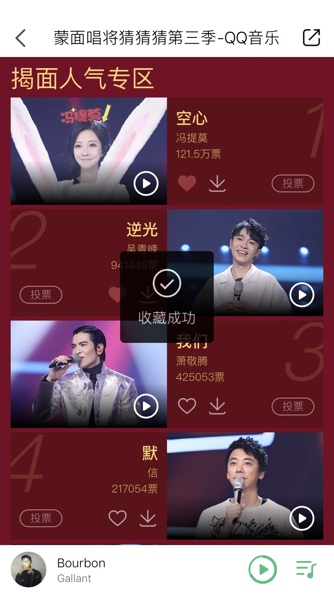
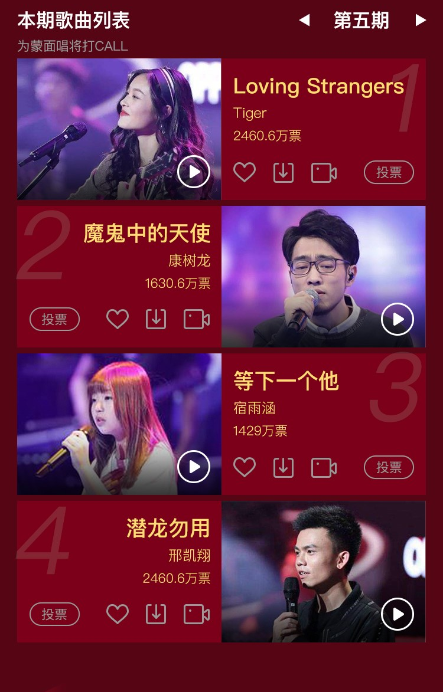

需求背景及收益
H5活动作为运营的重要促活/拉新手段，能带来百万量级的曝光。内容稳定的情况下，用户体验会决定用户是否持续消费内容。例：集团的同一个资源“蒙面唱将猜猜猜”，qq音乐和酷狗的体验会更好一些：
QQ音乐
跟技术和涉及同学们沟通后，提出以下两个可实行的优化方案


功能

涉及端

涉及接口

功能：收藏

大后台、后台、前端

2个

优化目标当界面收藏
功能详述
- 展示 当H5后端模板开启“收藏功能”时，H5活动则开启功能。
用户每次进入该活动界面时，前端同学需要请求用户对每首歌的收藏状态。
未收藏该歌曲时，icon为空心按钮；已收藏时，icon为实心。
- 交互 未收藏歌曲时，点击后变为实心icon；Toast提示 “您已收藏成功!”
已收藏歌曲时，点击后变为空心icon；Toast提示 “您已取消收藏！”
- 各端涉及的接口改动
前端/大后台/后台（不涉及客户端：请求时再获得收藏状态即可）
H5获取2个接口：
1）向大后台调取新增/取消收藏 (支持批量）
2）向大后台调取判断收藏状态 (支持批量) ；前端传“用户id”和“歌曲id”给大后台
后台需要新增“上传实心收藏按钮”的字段
- 埋点
收藏的总歌曲数 gvoice_songsfavorited
收藏过歌曲的总人数 gvoice_usersfavorited
- 无需UI改动